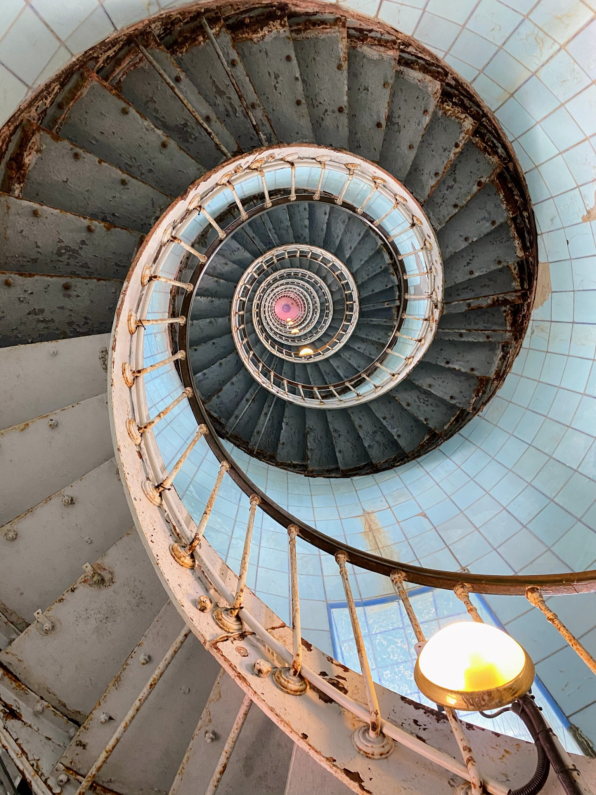
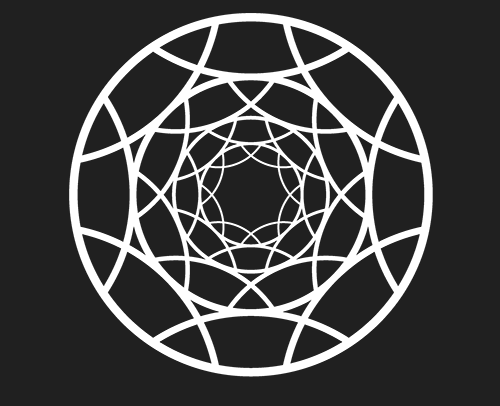

IN
Verwijst naar de innerlijke reis die we maken bij verandering. Echte transformatie begint bij bewustwording en reflectie op onszelf.
Verandering begint van binnenuit, maar staat nooit los van de wereld om ons heen. IN VERSUS is ontstaan vanuit de wisselwerking tussen persoonlijke groei en de context waarin we ons bewegen. De naam weerspiegelt de dynamiek van verandering: de spanning tussen oud en nieuw, tussen binnen en buiten, tussen wie we zijn en wie we kunnen worden.

De naam weerspiegelt de dynamiek van verandering. IN VERSUS verwijst naar de spanning tussen verschillende kanten van onszelf en de wereld om ons heen. Die spanning hoeft niet te worden opgelost of gladgestreken; ze kan juist aanleiding zijn om anders te kijken.
Samen vormen deze elementen de kern van IN VERSUS: verandering als een voortdurend proces van reflectie, perspectiefwisseling en interactie met de wereld om ons heen.
De naam kent meerdere lagen en verwijzingen:
Verwijst naar de innerlijke reis die we maken bij verandering. Echte transformatie begint bij bewustwording en reflectie op onszelf.
Afgeleid van versatile, wat staat voor flexibiliteit en het vermogen om je aan te passen aan verschillende contexten. In begeleidingsprocessen is deze wendbaarheid essentieel.
Letterlijk betekent het ‘tegen’ of ‘in contrast met’, maar voor mij verwijst het naar de interne worstelingen die we ervaren. Het gaat niet om conflict in negatieve zin, maar om het spanningsveld tussen verschillende kanten van onszelf.
Staat voor omkering, een andere manier van kijken. Net zoals in supervisie onderzoeken we nieuwe perspectieven en doorbreken we vaste denkpatronen.
Een term uit de medische wereld, waarin situs inversus verwijst naar organen die aan de andere kant van het lichaam zitten dan normaal. Dit symboliseert het spiegelen in supervisie: hoe kunnen we onze eigen gedachten en percepties omdraaien om tot nieuwe inzichten te komen?
Uiteindelijk gaat het om de relatie tussen ‘ik’ en ‘de ander’. We bestaan altijd in relatie tot anderen, en die interactie helpt ons om onszelf beter te begrijpen.

Het logo van IN VERSUS is ontworpen door mijn broer en geïnspireerd op een Portugese tegel in onze badkamer. De tegel gaf een gevoel van beweging en vooruitgang, wat perfect past bij het idee van verandering.
Zijn ontwerp doet denken aan een caleidoscoop: een symbool voor de verschillende perspectieven die we in supervisie en begeleiding verkennen. Net zoals een caleidoscoop telkens nieuwe patronen onthult wanneer je eraan draait, zo ontdekken we in reflectie en dialoog steeds nieuwe inzichten over onszelf en onze omgeving.
Muziek speelt een belangrijke rol in mijn leven en werk. De naam IN VERSUS heeft voor mij ook een muzikale betekenis. Het album Vs. van Pearl Jam bevat teksten die mij door moeilijke tijden heen hebben geholpen.
Muziek kan gevoelens versterken, herinneringen oproepen en betekenis geven aan ons verleden. In mijn praktijk gebruik ik muziek soms als een manier om in contact te komen met emoties en verhalen die anders verborgen blijven.
IN VERSUS is meer dan een naam; het is een benadering van verandering die uitgaat van de complexiteit van het leven. Of het nu gaat om supervisie, teamontwikkeling of organisatiebegeleiding, de kern blijft hetzelfde: reflectie, bewustwording en beweging creëren.
Lees meer over mijn achtergrond, drijfveren en de manier waarop ik naar mensen en organisaties kijk.
Lees meer over Evert ↗Lees publicaties en verken onderzoek naar begeleidingskunde, ideologie en organisatieverandering.
Bekijk artikelen & onderzoek ↗Neem contact op voor een kennismaking.